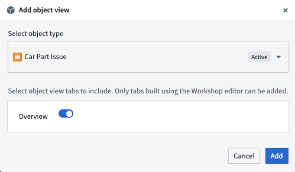

Use Foundry DevOps to include your Object Views in Marketplace products for other users to install and reuse. Learn how to create your first product.
Marketplace products only support Object View tabs that use the Workshop tab builder. The legacy Object View builder is not supported. If you would like to package an Object View tab that leverages the legacy builder, you should first rebuild the tab with the Workshop tab builder.
To add an Object View to a product, first create a product. Add outputs and then select the Add ontology entities option.
Once you have selected an Object View, you can select which tabs you would like to include in your product.
